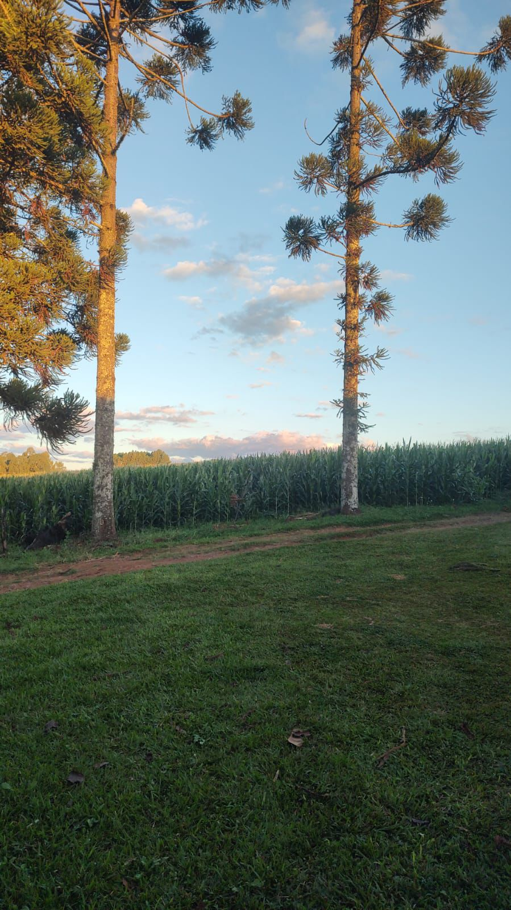

No meio rural, a produção é intensa e essencial. Os agricultores e pecuaristas são responsáveis por grande parte dos alimentos que chegam às cidades. O campo brasileiro se destaca na produção de soja, milho, café, carne, leite e frutas como laranja e banana.
Nas cidades, o que mais se consome vem direto do campo: arroz, feijão, carnes, hortaliças e leite. Essa relação mostra como o campo e a cidade estão ligados — um produz com esforço, o outro consome com confiança. Valorizar o meio rural é garantir comida na mesa e desenvolvimento para todos.
Mesmo com desafios como acesso a tecnologia e infraestrutura, o campo segue firme, produzindo com esforço e sabedoria. E quando há apoio e reconhecimento, essa conexão só se fortalece. Afinal, quando o campo produz com dignidade, a cidade se alimenta com qualidade.
Do campo para a cidade, chegam os alimentos que abastecem as mesas, a madeira que constrói, o algodão que veste e inúmeras matérias-primas que dão origem a produtos e serviços. A agricultura e a pecuária oferecem segurança alimentar, geram empregos e mantêm vivas tradições culturais que enriquecem as experiências urbanas.
Da cidade para o campo, fluem inovação, tecnologia e infraestrutura. Máquinas modernas, técnicas de cultivo sustentáveis, sistemas de logística e acesso a mercados ampliam a capacidade produtiva rural. Além disso, a cidade oferece oportunidades de educação, saúde e conectividade que ajudam a melhorar a qualidade de vida no campo.